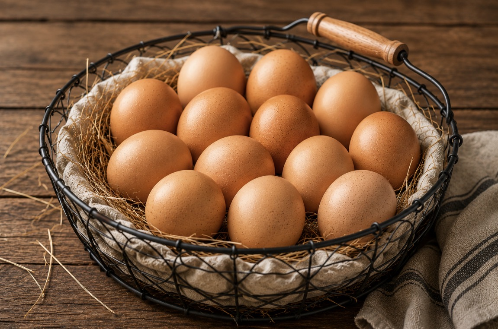

Every product that leaves this farm — whether grown on our own land or sourced from a partner we've vetted — is held to one standard. Ours.
Our hens live outdoors on real pasture year-round. No cages, no shortcuts, no compromise. They forage the way chickens are designed to — which is exactly why the yolks run deep gold and the shells crack firm. Everything from the land to the carton passes through our hands.

Our beef comes from a Georgia ranch whose practices we reviewed before we ever put the Banks Fresh Farms name on a single cut. Leaner, cleaner, and more nutrient-dense than what sits under a grocery store light — because it was raised the way cattle are meant to live.
Faith. Family. Real food held to a standard worth keeping.
Ready to taste the difference?
Shop Now